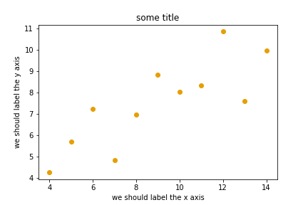
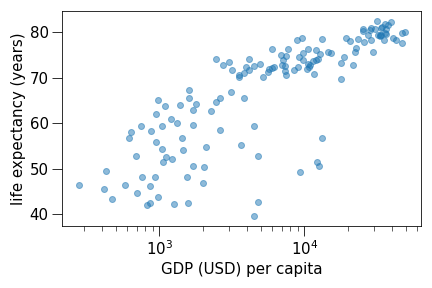

Data visualization with Matplotlib¶
Questions
When to use Matplotlib for data visualization?
When to prefer other libraries?
Objectives
Be able to create simple plots and tweak them
Know about object-oriented vs pyplot interfaces of Matplotlib
Be able to adapt gallery examples
Know how to look for help
Know that other tools exist
Repeatability/reproducibility¶
From Claus O. Wilke: “Fundamentals of Data Visualization”:
One thing I have learned over the years is that automation is your friend. I think figures should be autogenerated as part of the data analysis pipeline (which should also be automated), and they should come out of the pipeline ready to be sent to the printer, no manual post-processing needed.
No manual post-processing. This will bite you when you need to regenerate 50 figures one day before submission deadline or regenerate a set of figures after the person who created them left the group.
Use free tools: Python or R.
There is not the one perfect language and not the one perfect library for everything.
Within Python, many libraries exist: Matplotlib, Seaborn, Altair, Plotly, Bokeh, ggplot, PyNGL, and many others.
Two main families of libraries: procedural (e.g. Matplotlib) and declarative (using grammar of graphics).
Why are we learning Matplotlib?¶
Matplotlib is perhaps the most “standard” Python plotting library.
Many libraries build on top of Matplotlib.
MATLAB users will feel familiar.
Even if you choose to use another library (see above list), chances are high that you need to adapt a Matplotlib plot of somebody else.
Libraries that are built on top of Matplotlib may need knowledge of Matplotlib for custom adjustments.
Getting started with Matplotlib¶
Let us create our first plot (the highlighted line is only needed in a Jupyter notebook to show the generated figure in the notebook, we don’t need this when running this as script):
%matplotlib inline
import matplotlib.pyplot as plt
# this is dataset 1 from
# https://en.wikipedia.org/wiki/Anscombe%27s_quartet
data_x = [10.0, 8.0, 13.0, 9.0, 11.0, 14.0, 6.0, 4.0, 12.0, 7.0, 5.0]
data_y = [8.04, 6.95, 7.58, 8.81, 8.33, 9.96, 7.24, 4.26, 10.84, 4.82, 5.68]
fig, ax = plt.subplots()
ax.scatter(x=data_x, y=data_y, c="#E69F00")
ax.set_xlabel("we should label the x axis")
ax.set_ylabel("we should label the y axis")
ax.set_title("some title")
This is the result:
When plotting using a script, you often want to also save the generated figure:
# ... rest of the script
fig.savefig("my-plot.png")
plt.show()
This code snipped also contains plt.show() to show the figure on screen. We
did not need this in a Jupyter notebook.
When running a Matplotlib script on a remote server without a “display” (e.g. compute cluster), you may need to add this line:
import matplotlib.pyplot as plt
matplotlib.use("Agg")
# ... rest of the script
Exercises: Visualization-1
Extend the previous plot by also plotting this set of values but this time using a different color (
#56B4E9):# this is dataset 2 data2_y = [9.14, 8.14, 8.74, 8.77, 9.26, 8.10, 6.13, 3.10, 9.13, 7.26, 4.74]
Then add another color (
#009E73) which plots the second dataset, scaled by 2.0.Can you try to find out how to add a legend to the plot?
At the end it should look like this one:

Solution
%matplotlib inline
import matplotlib.pyplot as plt
# this is dataset 1 from
# https://en.wikipedia.org/wiki/Anscombe%27s_quartet
data_x = [10.0, 8.0, 13.0, 9.0, 11.0, 14.0, 6.0, 4.0, 12.0, 7.0, 5.0]
data_y = [8.04, 6.95, 7.58, 8.81, 8.33, 9.96, 7.24, 4.26, 10.84, 4.82, 5.68]
# this is dataset 2
data2_y = [9.14, 8.14, 8.74, 8.77, 9.26, 8.10, 6.13, 3.10, 9.13, 7.26, 4.74]
fig, ax = plt.subplots()
ax.scatter(x=data_x, y=data_y, c="#E69F00", label='set 1')
ax.scatter(x=data_x, y=data2_y, c="#56B4E9", label='set 2')
scaled = [y*2.0 for y in data2_y]
ax.scatter(x=data_x, y=scaled, c="#009E73", label='set 2 (scaled)')
ax.set_xlabel("we should label the x axis")
ax.set_ylabel("we should label the y axis")
ax.set_title("some title")
ax.legend()
Discussion
Why these colors? This qualitative color palette is opimized for all color-vision deficiencies, see https://clauswilke.com/dataviz/color-pitfalls.html and Okabe, M., and K. Ito. 2008. “Color Universal Design (CUD): How to Make Figures and Presentations That Are Friendly to Colorblind People.”.
Matplotlib has two different interfaces¶
When plotting with matplotlib, it is very important to know and understand that there are two approaches even though the reasons of this dual approach is outside the scope of this lesson.
The more modern option is an object-oriented interface (the
figandaxobjects can be configured separately and passed around to functions):
import matplotlib.pyplot as plt
# this is dataset 1 from
# https://en.wikipedia.org/wiki/Anscombe%27s_quartet
data_x = [10.0, 8.0, 13.0, 9.0, 11.0, 14.0, 6.0, 4.0, 12.0, 7.0, 5.0]
data_y = [8.04, 6.95, 7.58, 8.81, 8.33, 9.96, 7.24, 4.26, 10.84, 4.82, 5.68]
fig, ax = plt.subplots()
ax.scatter(x=data_x, y=data_y, c="#E69F00")
ax.set_xlabel("we should label the x axis")
ax.set_ylabel("we should label the y axis")
ax.set_title("some title")
The more traditional option mimics MATLAB plotting and uses the pyplot interface (
pltcarries the global settings):
import matplotlib.pyplot as plt
# this is dataset 1 from
# https://en.wikipedia.org/wiki/Anscombe%27s_quartet
data_x = [10.0, 8.0, 13.0, 9.0, 11.0, 14.0, 6.0, 4.0, 12.0, 7.0, 5.0]
data_y = [8.04, 6.95, 7.58, 8.81, 8.33, 9.96, 7.24, 4.26, 10.84, 4.82, 5.68]
plt.scatter(x=data_x, y=data_y, c="#E69F00")
plt.xlabel("we should label the x axis")
plt.ylabel("we should label the y axis")
plt.title("some title")
When searching for help on the internet, you will find both approaches, they can also be mixed. Although the pyplot interface looks more compact, we recommend to learn and use the object oriented interface.
Exercises: Visualization-2
Imagine we wanted to learn how to create a histogram and web searched “matplotlib plot histogram stack overflow” and found https://stackoverflow.com/a/5328669:
import matplotlib.pyplot as plt
import numpy as np
mu, sigma = 100, 15
x = mu + sigma * np.random.randn(10000)
hist, bins = np.histogram(x, bins=50)
width = 0.7 * (bins[1] - bins[0])
center = (bins[:-1] + bins[1:]) / 2
plt.bar(center, hist, align='center', width=width)
plt.show()
Try this example out in the Jupyter notebook.
Change the number of bins to 20.
Convert it from pyplot interface to using the object oriented interface.
At the end it should look like this one:
Solution
import matplotlib.pyplot as plt
import numpy as np
mu, sigma = 100, 15
x = mu + sigma * np.random.randn(10000)
hist, bins = np.histogram(x, bins=20)
width = 0.7 * (bins[1] - bins[0])
center = (bins[:-1] + bins[1:]) / 2
fig, ax = plt.subplots()
ax.bar(center, hist, align='center', width=width)
Discussion
Why did we do this? One day you may want to write functions which wrap
around Matplotlib function calls and then you can send fig and ax
into these functions and there is less risk that adjusting figures changes
settings also for unrelated figures created in other functions.
When using the pyplot interface, settings are modified for the entire
plt package. The latter is acceptable for linear scripts but may yield
surprising results when introducing functions to enhance/abstract Matplotlib
calls.
Styling and customizing plots¶
Matplotlib allows to customize almost every aspect of a plot.
It is useful to study Matplotlib parts of a figure so that we know what to search for to customize things.
You can also select among pre-defined themes/ style sheets, for instance:
plt.style.use('ggplot')
Do not customize “manually” using a graphical program (not easily repeatable/reproducible).
Exercises: Visualization-3
In this exercise we will learn how to use log scales. To demonstrate this we first fetch some data to plot:
# we use plotly, a different visualization library (more about this later)
# to fetch some data
import plotly.express as px
# we will be interested in the lifeExp and gdpPercap columns
data = px.data.gapminder().query("year == 2007")
data
Try the above snippet in a notebook and it will give you an overview over the data.
Then we can plot the data, first using a linear scale:
fig, ax = plt.subplots()
ax.scatter(x=data["gdpPercap"], y=data["lifeExp"], alpha=0.5)
ax.set_xlabel("GDP (USD) per capita")
ax.set_ylabel("life expectancy (years)")
This is the result but we realize that a linear scale is not ideal here:
Your task is to switch to a log scale and arrive at this result:
What does
alpha=0.5do?Try adding
plt.style.use('ggplot').
Solution
fig, ax = plt.subplots()
ax.scatter(x=data["gdpPercap"], y=data["lifeExp"], alpha=0.5)
ax.set_xscale("log")
ax.set_xlabel("GDP (USD) per capita")
ax.set_ylabel("life expectancy (years)")
Exercises: Visualization-4
Often we need to create figures for presentation slides and for publications but both have different requirements: for presentation slides you have the whole screen but for a figure in a publication you may only have few centimeters/inches.
For figures that go to print it is good practice to look at them at the size they will be printed in and then often fonts and tickmarks are too small.
Your task is to make the tickmarks and the axis label font larger, using Matplotlib parts of a figure and web search, and to arrive at this:
Solution
fig, ax = plt.subplots()
ax.scatter(x=data["gdpPercap"], y=data["lifeExp"], alpha=0.5)
ax.set_xscale("log")
ax.set_xlabel("GDP (USD) per capita", fontsize=15)
ax.set_ylabel("life expectancy (years)", fontsize=15)
ax.tick_params(which="major", length=10)
ax.tick_params(which="minor", length=5)
ax.tick_params(labelsize=15)
ax.tick_params(labelsize=15)
How to choose between the many libraries¶
Matplotlib is probably the most standard and most widely used library. However it is a relatively low-level interface for drawing (in terms of abstractions, not in terms of quality) and does not provide statistical functions. Some figures require typing and tweaking many lines of code.
Many other visualization libraries exist with their own strengths, it is also a matter of personal preferences:
Seaborn: high-level interface to Matplotlib, statistical functions built in.
Altair: declarative visualization (R users will be more at home), statistics built in.
Plotly: interactive graphs.
Bokeh: also here good for interactivity.
ggplot: R users will be more at home.
PyNGL: used in the weather forecast community.
K3D: Jupyter notebook extension for 3D visualization
What many people do (including the present instructor) is to browse existing example galleries for inspiration and to start with an example that is already close to what we have in mind and then to replace the example with own data and to customize the looks.
Example galleries and demos:
Altair (not part of default Anaconda installation)
ggplot (not part of default Anaconda installation)
PyNGL (not part of default Anaconda installation)
Let’s practice this!
Exercises: Visualization-5
Browse the various example galleries (links above).
Take an example that is close to your recent visualization project or simply interests you.
Try to reproduce this example in the Jupyter notebook.
If you have time, try to tweak it.
Keypoints
Avoid manual post-processing, script everything.
Browse a number of example galleries to help you choose the library that fits best your work/style.
Figures for presentation slides and figures for manuscripts have different requirements.
Think about color-vision deficiencies when choosing colors. Use existing solutions for this problem.